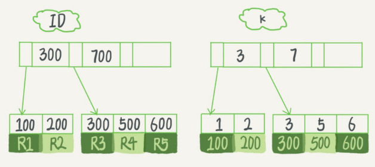
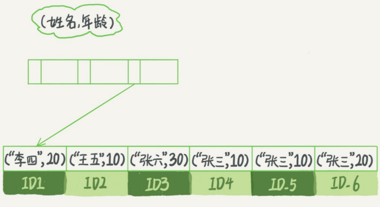

索引
索引是为了提高数据查询的效率，就像书的目录一样
索引的常见模型
- 哈希表：仅适用于等值查询的情况。
- 有序数组：在等值查询和范围查询场景中性能都很优秀，但是更新数据时成本高，因此只适用于静态存储引擎。
- 二叉搜索树：查询和更新的时间复杂度都是O(log(N))，但实际上大多数的数据库存储不使用二叉树，因为索引不只存在内存中，还要写在磁盘上。
为了让一个查询尽少的读磁盘，就必须让查询过程访问尽量少的数据块，那就要使用“N叉树”，这里的“N”取决于数据块大小。
以InnoDB的一个整数字段索引为例，这个N差不多是1200，这棵树高是4的时候，就可以存1200的3次方个值，这就已经是17亿了，树根的数据块总是在内存中的，一个10亿行的表上一个整数字段的索引，差找一个值最多只要访问3次磁盘（其实树的第二层也大概率在内存中）。
数据库底层存储的核心就是基于各种护具模型的，每碰到一个数据库，我们必须先关注它的数据模型，这样才能从理论上分析其适用场景。
InnoDB的索引模型
在InnoDB中，表都是根据主键顺序以索引的形式存放的，称为索引组织表。
每一个索引在InnoDB里面对应一颗B+树。
假设，有一个主键列为ID的表，表中有字段k，并且在k上有索引，建表语句为：
create table T(
id int primary key,
k int not null,
name varchar(16),
index (k)
)engine=InnoDB;
表中R1~R5的（ID，k）值分别为（100，1）、（200，2）、（300，3）、（500，5）和（600，6），两棵树的示意图如下：

不难看出，根据叶子节点的内容，索引类型分为主键索引和非主键索引。
- 主键索引：叶子节点存的是整行数据，也叫聚簇索引
- 非主键索引：叶子节点存的是主键的值，也叫二级索引
基于主键索引和普通索引的查询的区别？
- 如果语句是select * from T where ID=500, 即主键查询方式，则只需要搜索ID这颗B+树；
- 如果语句是select from T where k = 5, 即普通索引查询方式，则需要先搜索k索引树，得到ID的值为500，再到ID索引树搜索一次。这个过程叫*回表。
也就是说，基于非主键索引的查询需要多扫描一颗索引树，因此在应用中应该尽量使用主键查询。
索引维护
B+树为了维护索引的有序性，再插入新值的时候需要做必要的维护。以上图为例，如果插入新的行ID值为700，则只需要在R5的记录后面插入一个新位置。如果新插入的ID值为400，就需要逻辑上挪动后面的数据，空出位置。
更糟的情况是，如果R5所在的数据页已经满了，根据B+树的算法，需要申请一个新的数据页，然后挪动新的数据过去。这个过程称为页分裂，性能会受影响，此外还影响数据页的利用率（原本放在一个页中的数据，现在分到两个页，空间利用率降低约50%）
有分裂就有合并，当相邻的两个页由于删除了数据，利用率很低之后，会将数据页合并，，即页分裂的逆过程。
下面讨论一个案例：
在一些建表规范里，要求语句里一定要有自增主键。当然事无绝对，下面来分析一下哪些场景下应该使用自增主键，而哪些场景下不应该。
自增主键是指自增列上定义的主键：NOTNULL PRIMARYKEY AUTO_INCREMENT。
自增主键的插入数据模式符合递增插入的场景，每次插入一条新记录，都是追加操作，都不涉及挪动其他记录，也不会触发叶子节点的分裂。
而业务逻辑的字段往往很难保证有序插入，这样写数据成本相对较高。
除了考虑性能外，还可以从存储空间的角度看。假设表中确实有一个唯一字段，比如字符串类型的身份证号，那应该用它作为主键，还是用自增主键？
由于每个非主键索引的叶子节点上都是主键的值。如果用身份证号作为主键，那么每个二级索引的叶子节点占用20字节，而如果用整形作为主键，则只需要4个字节。
显然主键长度越小，普通索引的叶子节点就越小，普通索引占用的空间也就越小。
所以从性能和存储空间方面考量，自增主键往往是更合理的选择。
适合用业务字段直接作为主键的场景：
- 只有一个索引；
- 该索引必须是唯一索引
这就是典型的KV场景。
其他种类的索引
先看一个例子：
在前面提到的表T中，如果执行select * from T where between 3 and 5，其执行流程为：
- 在k索引树上找到k=3的记录，取得ID=300；
- 再到ID索引树查到ID=300对应的R3；
- 在k索引树下取下一个值k=5，取得ID=500；
- 再回到ID索引树查到ID=500对应的R4；
- 在k索引树取下一个值k=6，不满足条件，循环结束。
这个查询过程读了k索引树的3条记录（步骤1、3、5），回表了两次（步骤2、4）。
有没有办法经过索引优化，避免回表过程呢？
覆盖索引
如果执行的语句是select ID from T where k between 3 and 5，这时只需要查ID的值，而它已经在k索引树上了，因此可以直接提供查询结果，不需要回表，即在该查询里，索引k已经“覆盖”了我们的查询需求，称为覆盖索引。
由于覆盖索引可以减少树的搜索次数，显著提高查询性能，所以使用覆盖索引是一个常用的性能优化手段。
看这样一个问题：在一个市民信息表上，是否必要将身份证号和名字建立联合索引？
身份证号是唯一标识，如果有根据身份证号查询市民信息的需求，只要在身份证号字段上建立索引就够了，而再建立一个(身份证号、姓名)的联合索引，岂不是浪费空间？
但如果现在有一个高频请求，根据市民的身份证号查询姓名，这个联合索引就有意义了，因为可以不用回表。
当然，索引的维护都是有代价的，因此，再建立冗余索引来支持覆盖索引时就需要权衡考虑了，这正是DBA的活。
最左前缀原则
B+树这种索引结构，可以利用索引的“最左前缀来定位记录”。
为了直观的说明这个概念，使用（name，age）这个联合索引来分析：

可以看到，索引项是按照索引定义里面出现的字段顺序进行排序的，只要满足最左前缀，就可以利用索引来加速检索，这个最左前缀可以是联合索引的最左N个字段，也可以是字符串索引的最左M个字符。
当查询条件是“where name like '张%'”时，也能用上这个索引，查找到第一个符合条件的记录时ID3，然后向后遍历，直到不满足条件为止。
因此，在建立联合索引的时候，需要合理的安排索引内的字段顺序。
原则上，如果通过调整顺序，可以少维护一个索引，那么这个顺序往往就是需要优先考虑采用的。
比如当已经有了（a，b）这个联合索引后，一般就不需要单独在a上建立索引了。如果既有联合查询，又有基于a、b各自的查询，就不得不再维护一个（b）索引了。
这个时候，考虑的原则就是空间了。比如市民表，name字段比age字段大，那就建议创建（name, age）联合索引和一个（age）单字段索引。
索引下推
还是以市民表的联合索引（name，age）为例，如果要：检出表中“姓张的10岁男孩”，这个语句在搜索索引树的时候，只能用“张”，找到第一个满足条件的记录ID3，然后判断其他条件是否满足。
在MySQL5.6前，只能从ID3开始一个个回表，到主键索引上找出数据行，再对比字段值；
而在MySQL5.6引入的索引下推优化，可以在索引遍历的过程中，对索引中包含的字段先做判断，直接过滤掉不满足条件的记录，减少回表次数。